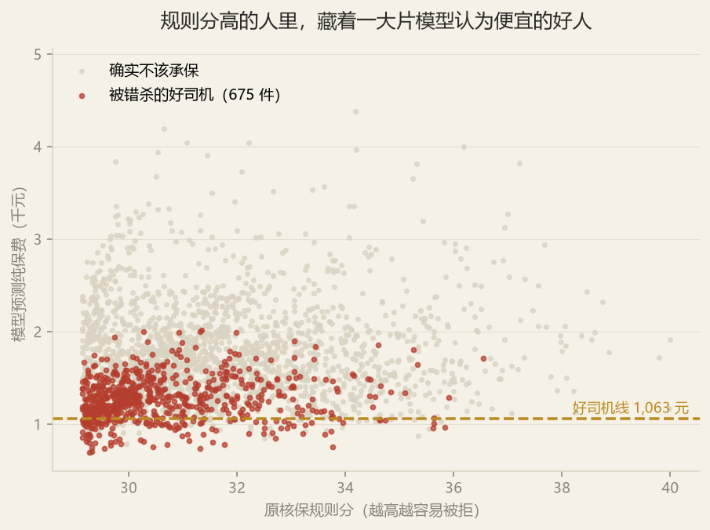

34
第 2 段 · 端到端
共 43 页
端到端复盘：八步流水线
把前面 11 页的零件装回一台完整的机器。每一步只讲「做了什么」和 「为什么非做不可」——细节都在前面的页面里。
本页目录
步骤 1 · 读数据 & 体检 —— 第 24 页步骤 2 · 定义「好司机」—— 第 24 页步骤 3 · 构造训练集 —— 第 23 页步骤 4/5 · 建模与评价 —— 第 25 页 ·
26 · 27 · 28步骤 6 · 给拒保件打分 + 外推体检 —— 第 31 页步骤 7 · 业务账 —— 第 32 页步骤 8 · 偏差修正 —— 第 29 页 · 30本页要做的三件事
八步流水线从头走一遍，每一步回答「为什么这么做」，而不只是「做了什么」。
目标
把前面 11 页的零件，装回一台完整机器，每一步讲清「为什么非做不可」。
输出
八步端到端流水线，外加一张「六个真实踩过的坑」自检表。
怎么读
把它当成一张地图——卡在哪一步，就跳回那一页；这些坑全部藏在「看起来正常」的输出里，不会被正确流程自动拦住。
读完你会知道
整套流程里，真正决定成败的不是算法，是每一步对「数据从哪来」的追问。
步骤 1 · 读数据 & 体检 —— 第 24 页
20,000 人、承保 11,200、拒保 8,800、审计 358。
最重要的动作：认出 claim_cnt = −1 是「无记录」而非「零出险」。
步骤 4/5 · 建模与评价 —— 第 25 页 · 26 · 27 · 28
先诚实撞墙（直接对纯保费建模，deviance 是常数基线的 100.1%）， 再拆频率×损失，三个组合同台比试，选出 ③ 频率GLM × 损失均值 （AUC 0.885，圈最便宜20%里好司机占比 96.6%）。
步骤 6 · 给拒保件打分 + 外推体检 —— 第 31 页
8,800 件全部打分；同时量出到训练中心的距离，划出近点 6,273 / 远点 2,527。纯度从内插 96.6% 掉到外推近点 77.7%——外推是有价签的。
步骤 7 · 业务账 —— 第 32 页
增量口径毛利（赔款只扣一次）；倒 U 曲线定位最优圈选规模 （峰值 4,400 件，增益 387,474 元/年）。

一图看懂整个案例：横轴是原核保规则分（越高越容易被拒），纵轴是模型预测。红色点是藏在规则分高处的被错杀者——规则看不见他们，模型看见了。
工程上的自我检讨（全部真实发生）
| 踩过的坑 | 表象 | 根因与修法 |
|---|---|---|
| GBDT 发散 | 预测爆到天文数字 | 树把当前预测 F 也学进去又整段加回 → 只学纯增量 + 步长上限 |
| AUC 方向反了 | 模型「比乱猜还差」 | 找的是低风险，打分要用 −预测值 |
| 列宽对不齐 | 矩阵维度报错 | 分类水平集没冻结 → 显式生成全部非基准水平、缺失补 0 |
| DR 退化成 IPW | 残差恒为零 | 第一项没外推到全体 → 改为全体外推 + 加权残差 |
| 性能车反转 | 最低档误伤 88.6% | 训练集只见过 18 件 → 修规则 + 特征覆盖体检护栏 |
| 业务账全负 | 所有档位「亏损」 | 赔款被 COR 和增量扣了两遍 → 改增量口径 |
把这六个坑放在这里，是因为它们全部不会被任何「正确流程」自动拦住—— 每个坑都藏在「看起来正常」的输出里。清单化的自我检讨，是精算职业最老的美德， 在机器学习里同样管用。
说人话
八步流水线，本质上是在回答同一个问题的三副面孔：机器问「他是谁」（建模）， 业务问「他值多少钱」（账），精算问「你怎么知道自己没看错」（偏差与外推）。
本页词语解释正文里带虚线的词，点一下也能到这里
训练集拿来「教」机器的那部分数据，答案一起给它看。
测试集机器从没见过的那部分数据，答案先藏起来，用来检验它是不是真学会了。
ML不把规则写死，而是让机器自己从一堆过去的例子里「总结」出规律。
上线与部署把训练好的模型接进真实业务流程，让它开始给真实的人打分。这之后的每一个错误都要付真金白银。
A/B把人随机分成两组，一组用老办法、一组用新模型，比一比谁的结果真的更好。这是唯一能证明「有用」的办法。
外推（训练域外）给模型一个它训练时从没见过的类型的人打分。它可能装作很懂，其实是在瞎猜。
西红精算 · 用数据讲保险 · 用真心做科普
本库全部结论由
看不懂的词见 术语表 · 想看源代码代码入口 · 读完还是飘？看 一页讲清楚 · 关于这个库 · 关于西红精算 · 知识星球：用数据看保险的精算师们
本库全部结论由
ai-kb/code 中的模拟数据与手写模型产生，数字统一来自 out/facts.json（三个动画的数字来自 out/anim_facts.json，由 node code/_animfacts.js 复算），可一键复现。看不懂的词见 术语表 · 想看源代码代码入口 · 读完还是飘？看 一页讲清楚 · 关于这个库 · 关于西红精算 · 知识星球：用数据看保险的精算师们